The data you'll see here is the Frequency Table, Pie charts, and its bargraph of our Qualitative data.
Then for our Quantitative, we placed its frequency table, box-plot, histogram, center, variability and its five-number summary.
But first, let us identify its variables and its type of data.
Sample Data
1. Target population: People who pay for medical expenses annually due to their illnesses or their family’s illnesses.
2. Sample size: 37.34% of 1339 (which is 50 individuals out of the 1339 individuals from the original dataset)
3. Sampling method: Online survey, answered by people from different places.
Variables
1. Qualitative variables: Region, and being a smoker or not
2. Quantitative variables: medical cost in dollars, BMI (underweight, normal, overweight, obese, etc.)
Qualitative Data
We have 2 Qualitative varaibles, which is region and smoker:
Region
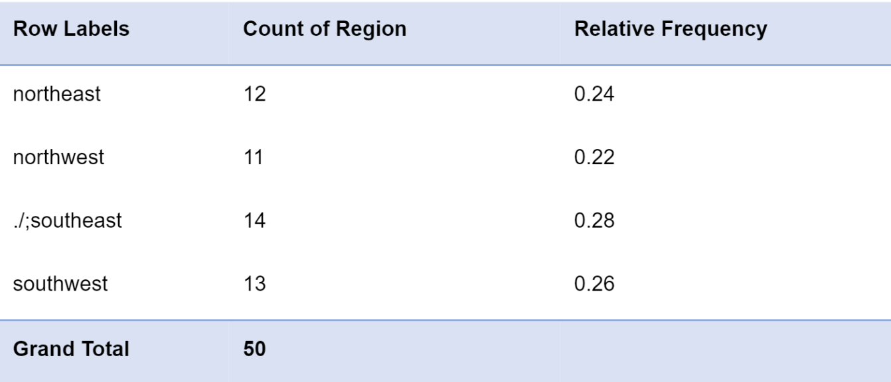
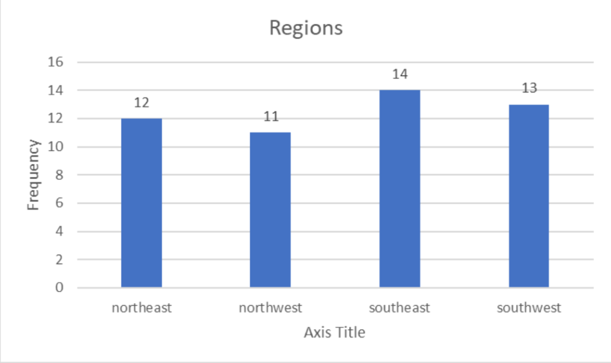
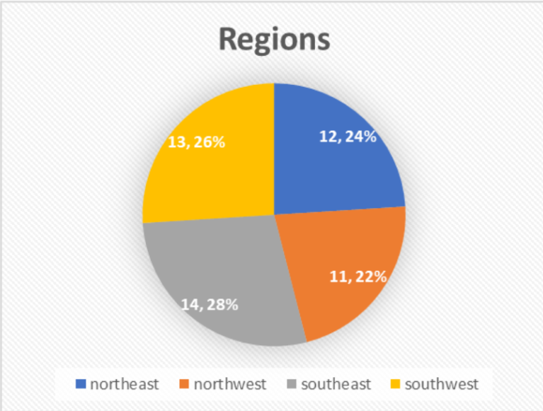
The pie chart shows that southeast is where the majority of the individuals is from,
with 28% frequency, while northwest is the least frequent region, with 22% frequency.
The bar graph shows a more visible representation of the frequency table
which shows that the region southeast is where the majority of the sample came from,
while the least number of samples came from northwest.
Smoker
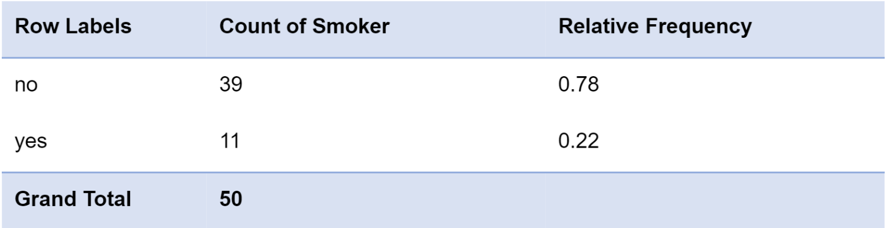
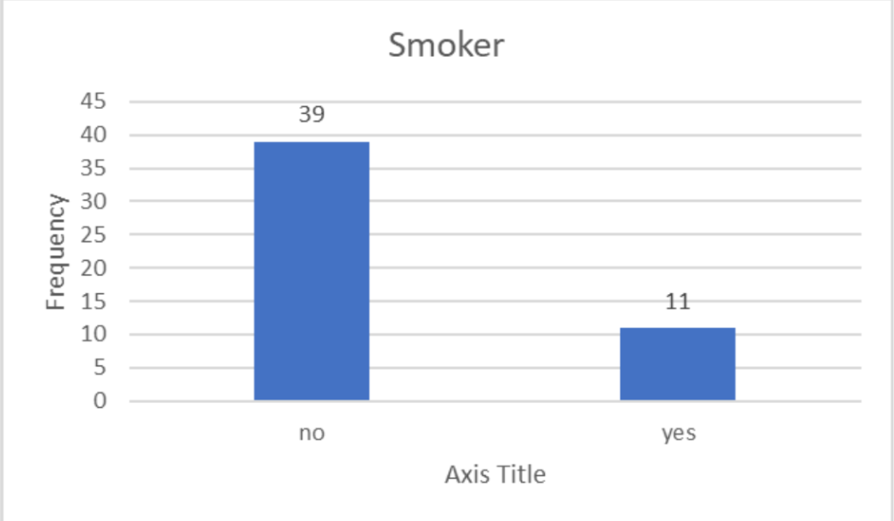
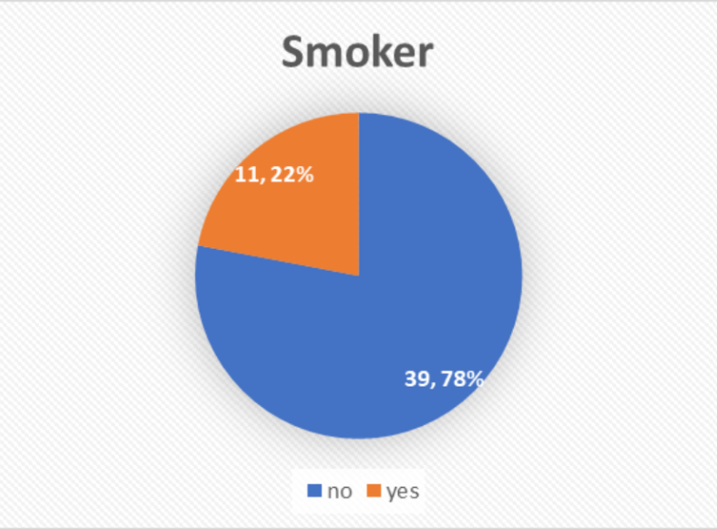
The pie chart above shows that 78% of our individuals are non-smoker which is approximately 39 individuals,
while the rest 11 individuals are are smokers.
The bar graph above shows that the majority of the individuals in our data set is non-smokers.
Quantitative Data
We also have 2 Quantitative varaibles, which is the individuals BMI and their medical costs:
BMI
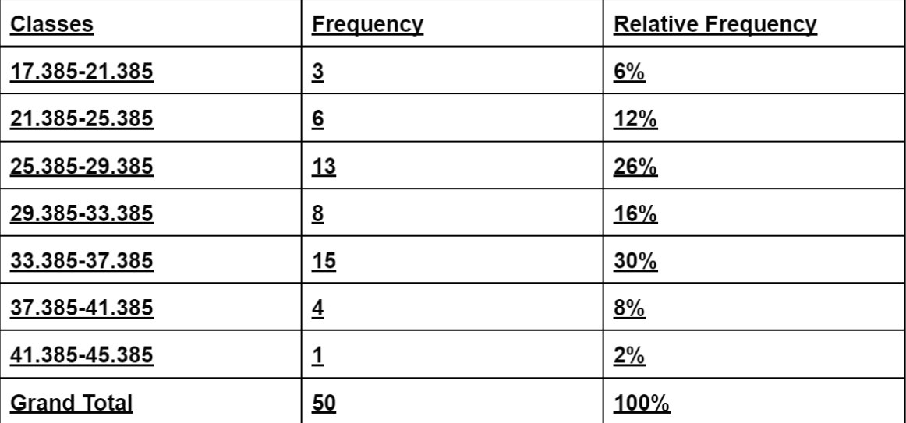
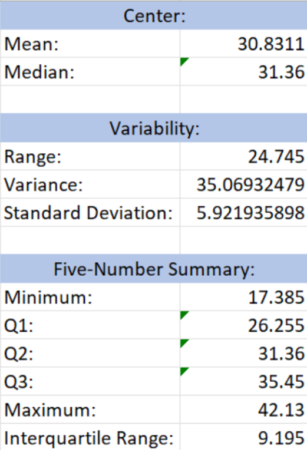
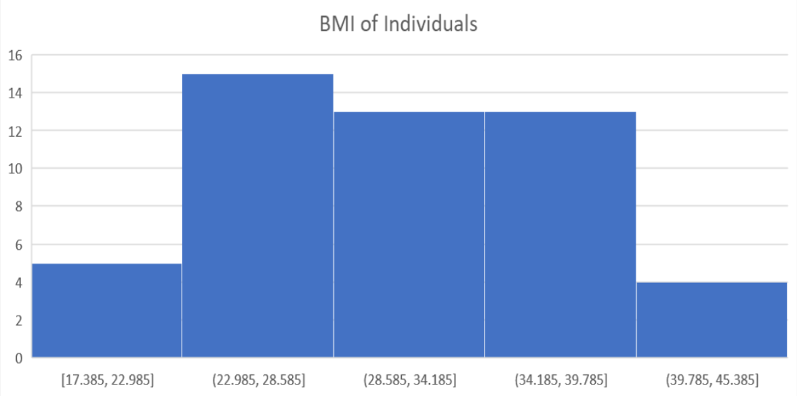
The histogram for the BMI indicates that the
histogram is positively skewed as the values
are mostly on the left. It also shows that most
individuals from the dataset has a BMI
of [22.985, 28.585].
From the table we can see above,
the IQR is at 9.195 which means that the value
in the 3rd quartile are not that far apart from the 1st
Quartile as they are subtracted. It tells us about the spread or distribution of the dataset.
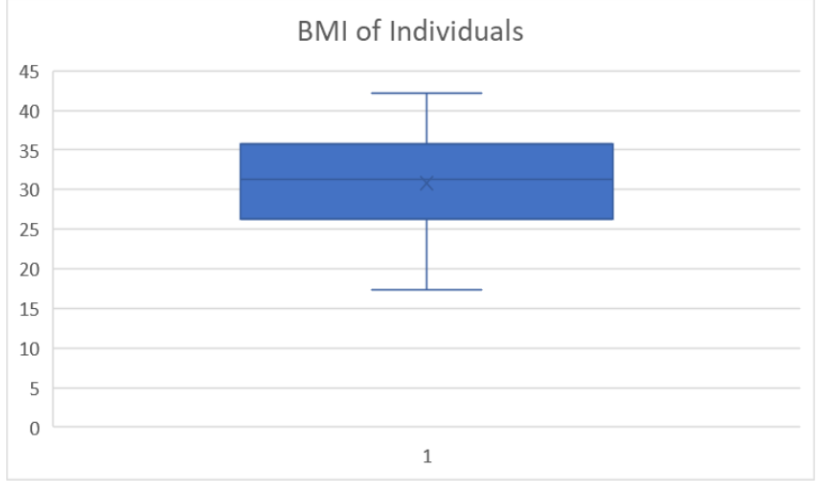
The boxplot for the BMI indicates that the histogram is
negatively skewed. Shown on the box-plot above, its left arm is longer which can indicate that its distribution is negatively skewed.
Medical Costs
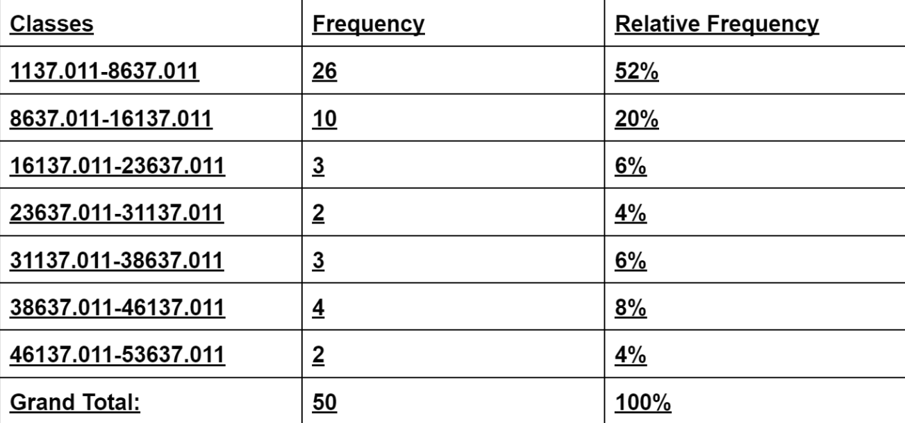
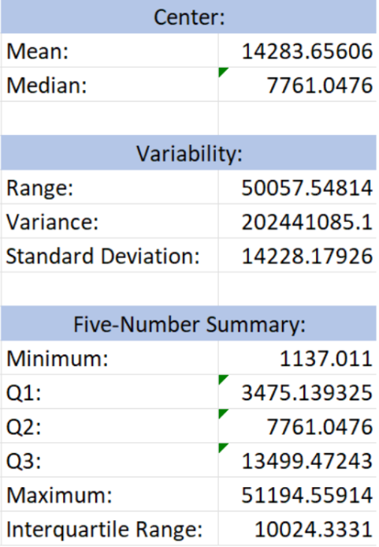
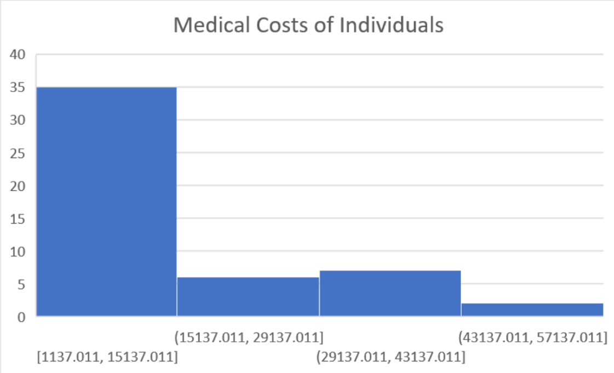
The histogram is positively skewed, therefore most
of the values are on the left side. It shows
that the most frequent medical cost in dollars are
between [1137.011,15137.011].
The IQR is 10024.33, this means that the difference
between Q3 and Q1 is 10024.33. The IQR is the
safest to use because no outliers are found in the middle half of the dataset.
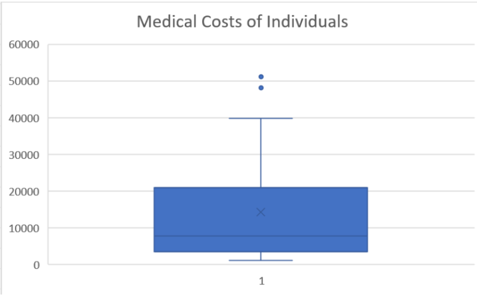
It is skewed to the right, meaning it is positively skewed. This box plot shows that its distribution is positively skewed.
Conclusion
Looking back, we’ve realized many factors contribute to a healthy lifestyle. Exercising, sleeping at least 7-10 hours a day,
eating fruits and vegetables, and many other activities help us stay healthy. However, some actions like smoking and drinking damages
our health as time passes. Even how safe our environment is, reflects on our wellbeing as well. We researched and created this paper
in hopes of bringing light to people to be aware of these factors and its effect on their health and consequently their finances.
Referencing our data set, we have four variables, two of which are quantitative while the other two are
qualitative. We have inferred the following through our research:
Medical charges may vary over different locations due to accessibility of hospitals or the facilities that they have.
From the dataset, we can see that there are a variety of medical costs ranging from a few to tens of thousands of dollars.
Being a smoker, is a factor why one’s medical cost increases. When the effects of smoking manifests on one’s health,
it consequently affects the risk of severe diseases and being in a hospital. Our dataset shows that smokers are likely to spend more.
The BMI of an individual tells us about their health. People whose BMIs aren’t considered normal or healthy may be prone to diseases.
From our dataset, people of an unhealthy BMI have higher amounts spent on medical needs.
Being a smoker has an effect on one’s BMI. Smokers are usually unhealthy in terms of BMI.
In analyzing the data, some problems might occur due to the data source itself. Since we didn’t do the survey first-handedly,
there are chances that the data may not be that accurate or specific. As a result, our understanding and analysis may have a larger
room for errors and misinterpretation than groups that did the surveys themselves. For future research, we suggest topics that are
still somewhat relevant to medical costs and finances because we believe these two go hand in hand.